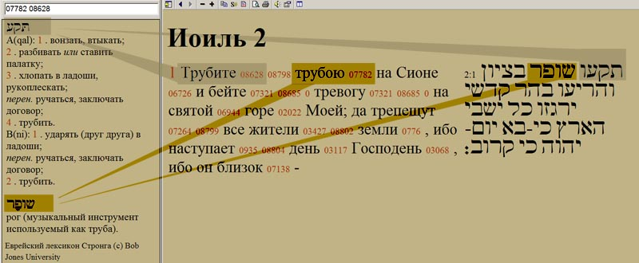

Sounds of the Shofar. Awe and Prophecy
What do these sounds mean for us, what action has the Creator prepared? What response does He expect from our heart?
Sounds of the shofar. Awe and prophecy. Yom Kippur
Author: Ephraim Kalish
The Feast of the Remembrance of the Sound of the Shofar has passed (its other name in the Torah is the Feast of Blowing the Shofar; also called the Feast of Trumpets), but the sounds of the shofar go on in the synagogues throughout the ten days before Yom Kippur. In Jewish tradition these days have a special name, "YAMIM NORA'IM" (Hebrew: days of awe), the time that leads up to and links the Feast of the Remembrance of the Sound of the Shofar with Yom Kippur, a time when we can reflect on what these sounds mean for us and what action the Creator has prepared. What response does He expect from our heart?
According to Soncino, the sound of the shofar is associated with deep inner experience and a direct appeal to the very soul of a person.
The prophet Amos speaks very emotionally, in poetic imagery, of the unexpected effect that the shofar produces.
"Shall a shofar be blown in the city, and the people not tremble?… The lion hath roared, who will not fear? the Lord GOD hath spoken, who can but prophesy?"
Amos 3:6, 8
6 אִם־יִתָּקַע שׁוֹפָר בְּעִיר וְעָם לֹא יֶחֱרָדוּ
8 אַרְיֵה שָׁאָג מִי לֹא יִירָא אֲדֹנָי יְהוִה דִּבֶּר מִי לֹא יִנָּבֵא׃
6 IM YITAKA SHOFAR BE-IR VE-AM LO YECHERADU? 8 ARYEH SHA'AG MI LO YIRA? ADONAI DIBER, MI LO YINAVE?
The shofar produces two quite different effects:
1. A more accurate translation of the Hebrew word for "be afraid" (CHARAD) is to tremble, to shudder. The sounds of the shofar throw the people into holy awe. And every work comes from God.

2. The prophet links the blast of the shofar with the roaring of a lion. And its effect is different: "The Lord GOD hath spoken, who can but prophesy?"
We can see two interesting things here: on the one hand, the prophet Amos compares the shofar to a lion's roar, and the voice of the shofar causes trembling; but on the other hand, it (the voice of the shofar) calls forth prophetic action.
Let us look at the three kinds of shofar blowing that we heard throughout the feast, and at the basis that the names of these kinds of blowing have in Scripture.
TEKIAH: piercing to the depths
To reflect on the TEKIAH blast, let us begin with a text from the New Testament, the Letter to the Hebrews (4:12): "For the word of God is quick, and powerful, and sharper than any twoedged sword, piercing even to the dividing asunder of soul and spirit, and of the joints and marrow, and is a discerner of the thoughts and intents of the heart." The Word of God is compared to a piercing sword that can penetrate to the depths. It is no accident that I chose this passage. I think the author of the Letter to the Hebrews had the action of the shofar in mind as an image.
So we are speaking of the first shofar blast, TEKIAH. In general, when one says in Hebrew "to blow the shofar", this is the very word used: "litko'a ba-shofar".
If you search by Strong's numbers, entering together the number of the shofar, 07782, and the number of the TEKIAH blowing we are looking at, 08628, you get a whole list. It is worth looking at all these cases: where Yehoshua brings down the walls of Jericho, this word "TEKIAH" is used. Gideon saves Israel: it is written that he is clothed with the Spirit in order to blow the shofar, the same word "TEKIAH". "The great shofar shall be blown", that is the prophet Isaiah, "and they shall come… and shall worship the LORD in the holy mount at Jerusalem". This too is the action of the shofar, TEKIAH.
Here I would like to look at the prophet Joel 2:1: "Blow ye the trumpet in Zion, and sound an alarm in my holy mountain: let all the inhabitants of the land tremble: for the day of the LORD cometh, for it is nigh at hand." I chose this passage because on the eve of Yom Kippur, the Day of Judgement, on the eve of great expectations, the days of awe, I think these verses are in tune with this time. Here it is written "blow ye the trumpet", but of course the Hebrew uses other words: "TIK'U SHOFAR BE-TSIYON".

The meaning of "TEKIAH" is to drive in, to thrust. The sense of this verb is "to go right through, to pierce". The point is that it is not just something passing through something else, but overcoming, as a sword overcomes the resistance of flesh.
"TIK'U SHOFAR": here the Lord speaks of great devastation, of great disasters and armies. And this is the meaning of "LITKO'A BA-SHOFAR" (blowing the shofar): something that requires overcoming, effort, radical change. In the same passage, in verse 15, God again uses the same words, "TIK'U SHOFAR BE-TSIYON":
"15 Blow the trumpet in Zion, sanctify a fast, call a solemn assembly." Fasting here is a parallel action to this blowing of the shofar. Fasting as overcoming, fasting as humbling one's flesh.
And I would like to look at one more passage, from the prophet Zechariah (9:14): "And the LORD shall be seen over them, and his arrow shall go forth as the lightning: and the Lord GOD shall blow the trumpet, and shall go with whirlwinds of the south."
You have already guessed: here, of course, God will sound not a trumpet but a shofar: "BA-SHOFAR YITKA". It is interesting that here the blowing of the shofar by God Himself is compared with His own arrow, like lightning: "his arrow shall go forth as the lightning". That is, the thunder of the shofar with which the Lord will sound will be like something that pierces like an arrow.
What then shall we say? TEKIAH means to pierce right through, overcoming, like the Word of God, which pierces to the joints and marrow, to the dividing of soul and spirit, and judges the thoughts and intents of the heart.
About the other kinds of shofar blowing, see the next articles.